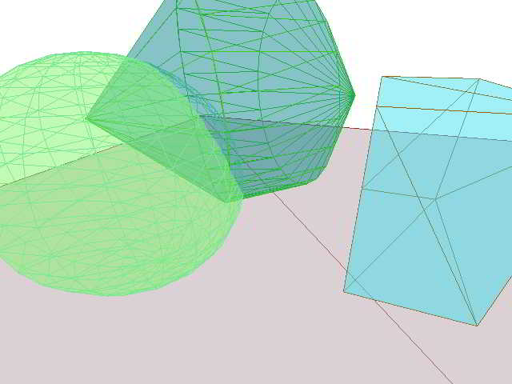

example and demo files for three.js
Standing on the shoulders of mrdoob...
Coding Samples
The Coding Samples files are intended to help you learn how to write code for three,js. Each file provides the simplest and minimum possible code needed to carry out a single intended result. The goal is to get the information as to how to create or dp something into your brain in the shortest possible time.
Coding Demos
The Demo Files are intended to show off cool things you can do using three.js. Each file provides a demo. The goal is to get you to think "Wow, I've come to the right place. This is just what I need!" (or to think the opposite as the case may be) in the shortest time.
The current demos involve wrapping images around swirling cubes. The images are of my second daughter and three of her drawings.
All the files are built on top of three.js which is a lightweight 3D engine working over WebGL that is "with a very low level of abstraction (aka for dummies)". All I can say is "Works for me!"
Because of their tightness these files do not contain a warning that you need a browser that supports WebGL. Currently Internet Explorer does not support WebGL. Best to use Google Chrome or the beta versions of FireFox 4 and Safari 10.6 .
Theo Armour, 2011-01-23